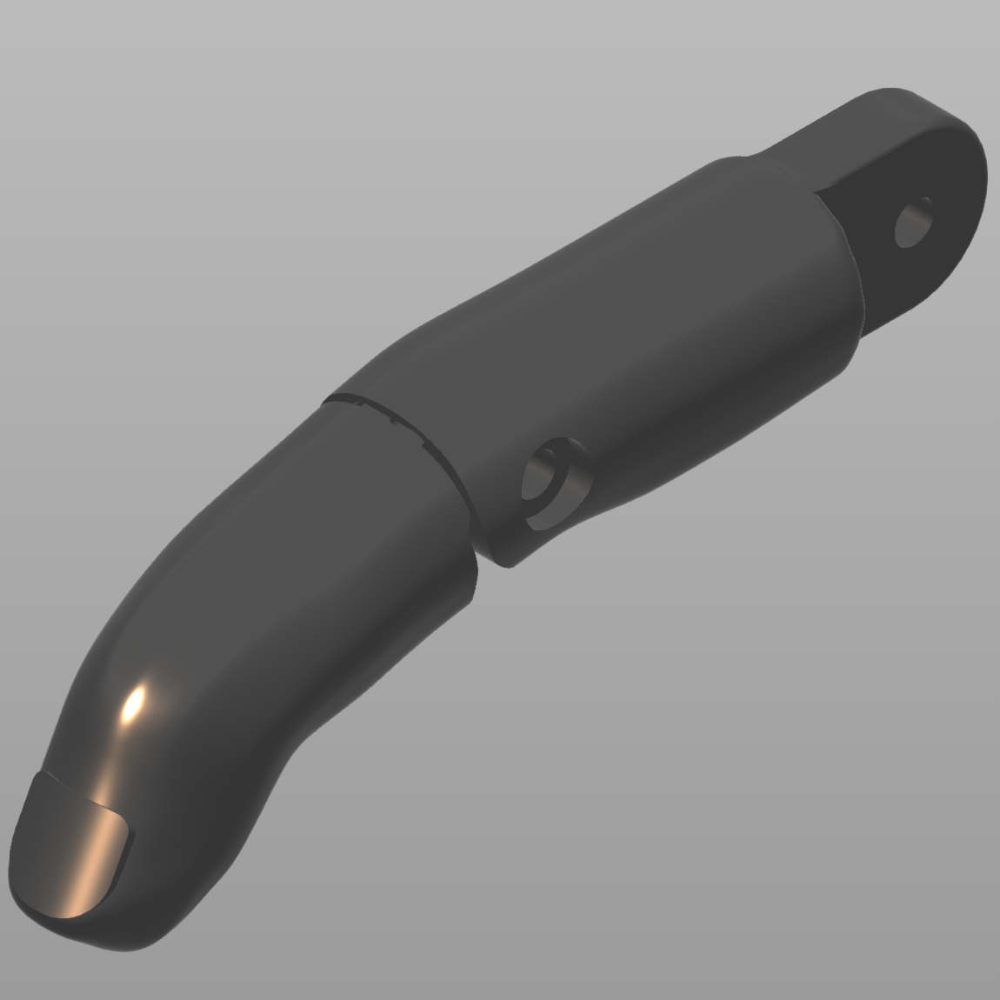
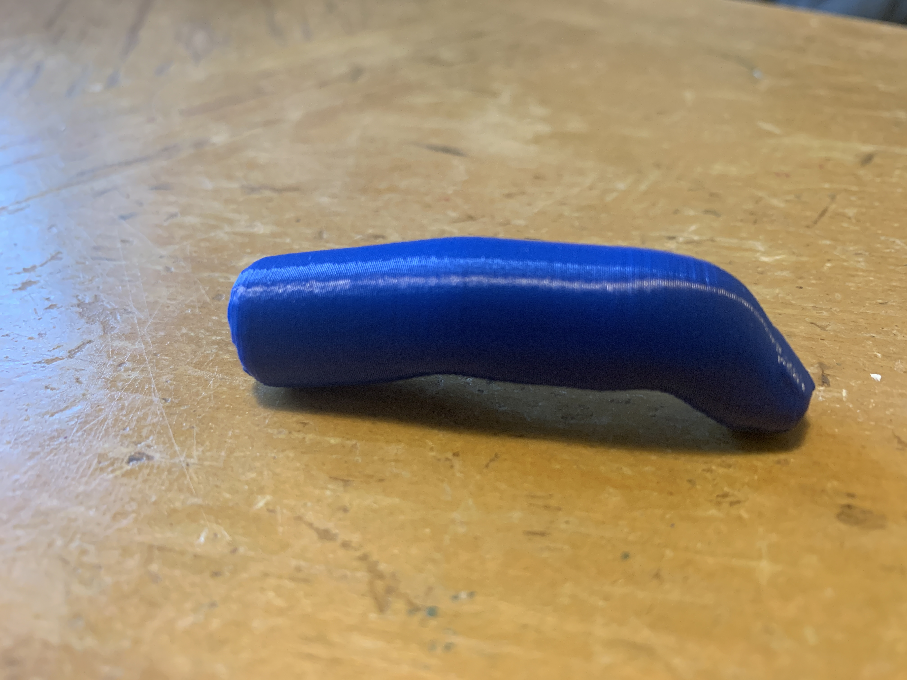
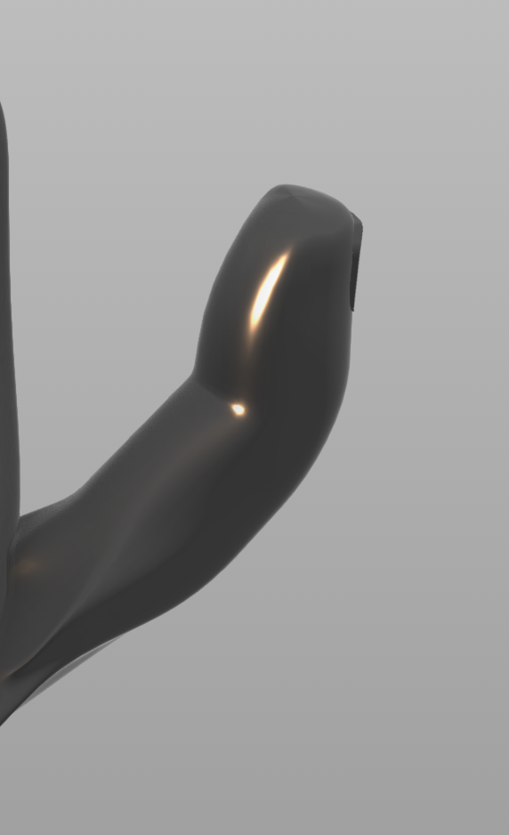
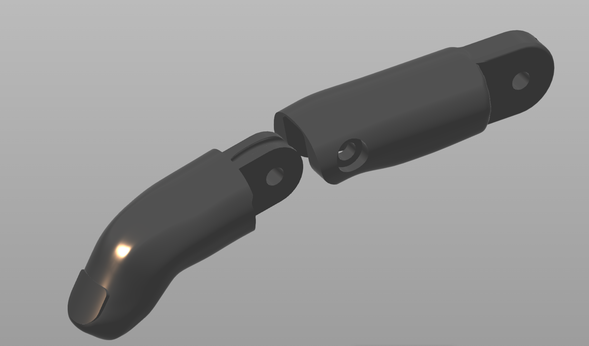
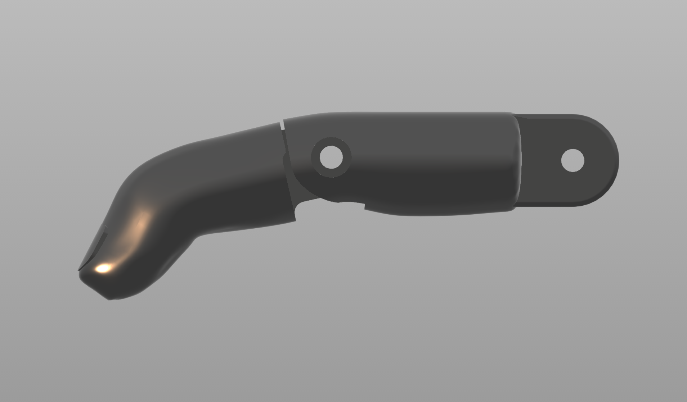
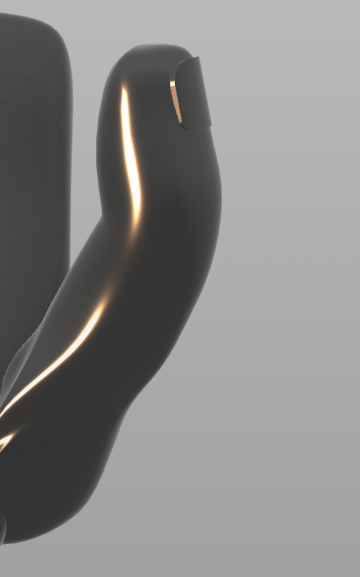
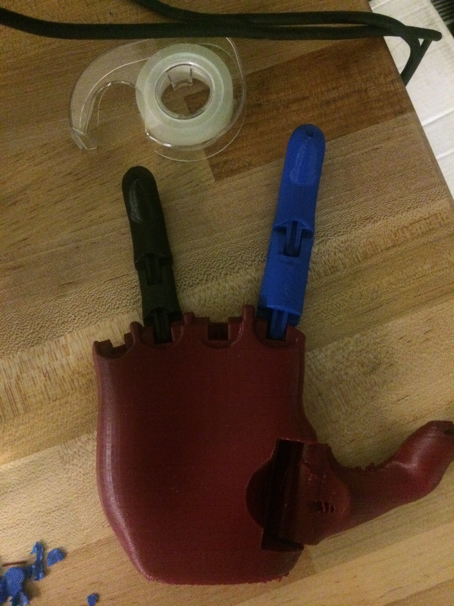
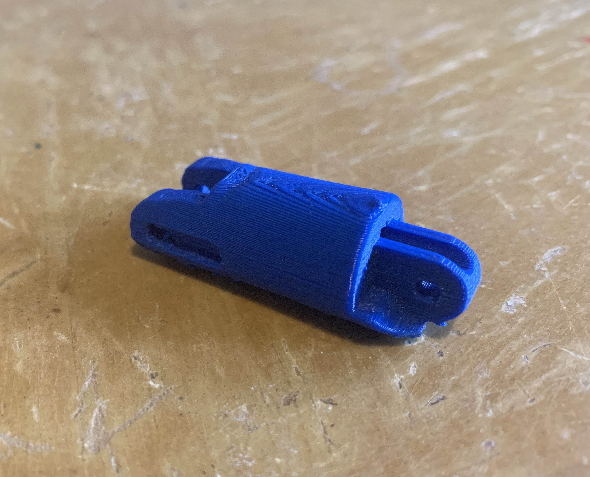
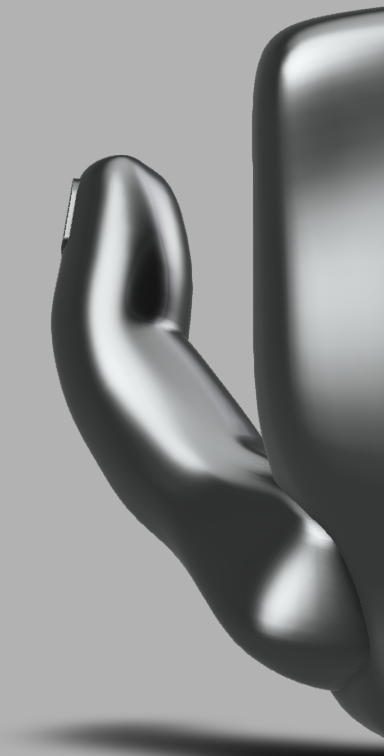

3D PRINTED PROSTHETIC HAND
Design of fingers and thumb for neuraly controlled, 3D printable prosthetic hand using Autodesk Fusion 360
The aim of the Michigan Neuroprosthetics Design Team is to create a 3D printable, neurally controlled prosthetic hands. Children who require prosthetic limbs will quickly outgrow them. By 3D printing the limb can be updated and grow with the child at a fraction of the cost.
As a member of the mechanical engineering sub-team I was tasked with designing humanoid looking fingers. The external design of the fingers was created using Fusion 360's mesh tool. To obtain realistic fingers movements joints and wire tendon holes were added to the fingers.








